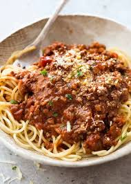

Ingrediënten:
100 g spaghetti of een andere pasta naar keuze
100 g rundergehakt
1/4 ui, fijngesneden
1 teentje knoflook, fijngehakt
1/4 wortel, geraspt
1/4 stengel bleekselderij, fijngesneden
1/2 blik (200 g) gepelde tomaten
1 eetlepel tomatenpuree
1 klein glas rode wijn (optioneel, ongeveer 50 ml)
1 theelepel olijfolie
1/4 theelepel gedroogde oregano
1/4 theelepel gedroogde basilicum
Zout en peper naar smaak
Parmezaanse kaas (voor garnering)
Verse basilicum (optioneel)

Bereidingswijze:
Voorbereiding van de saus:
Verhit de olijfolie in een kleine pan op middelhoog vuur. Voeg de fijngesneden ui en knoflook toe en bak ze tot ze glazig zijn, ongeveer 2-3 minuten.
Vlees bakken:
Voeg het rundergehakt toe en bak het tot het bruin is, terwijl je het vlees met een spatel losmaakt.
Groenten toevoegen:
Voeg de geraspte wortel en fijngesneden bleekselderij toe en bak alles nog eens 5 minuten tot de groenten zacht worden.
Tomaten en kruiden:
Roer de tomatenpuree door het mengsel en bak dit 1 minuut mee. Voeg vervolgens de gepelde tomaten toe en breek ze in kleinere stukjes. Voeg de wijn (optioneel) en de oregano, basilicum, zout en peper toe. Laat de saus op laag vuur zachtjes pruttelen gedurende minstens 20-30 minuten.
Pasta koken:
Kook ondertussen de pasta volgens de instructies op de verpakking in gezouten water. Giet af en bewaar een beetje kookvocht.
Samenvoegen:
Meng de gekookte pasta door de saus. Als de saus te dik is, voeg dan wat kookvocht toe om de saus te verdunnen.
Serveren:
Serveer met geraspte Parmezaanse kaas en eventueel verse basilicum.